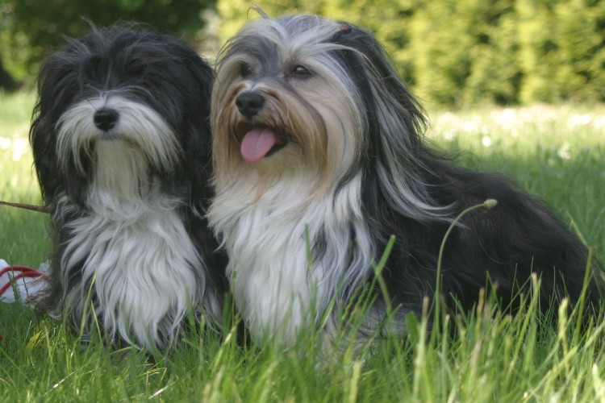

|

|
Herzlich Willkommen
auf den Informationsseiten der Landesgruppe Berlin
im Verband Deutscher Kleinhundezüchter e.V.
|
|
|
Wir sind Ihr Ansprechpartner für Kleinhunde in Berlin/Berliner Umland und
möchten Ihnen die in unserer Landesgruppe gezüchteten Rassen genauer vorstellen.
Wir informieren Sie zu unseren jährlichen Ausstellungen, sonstigen Ereignissen
in unserer Landesgruppe und teilen Ihnen Termine mit, wo Sie mit uns Kontakt aufnehmen
können, um ganz persönlich beraten zu werden.
Züchter aus unserem Verband finden hier die Kontaktdaten zu unseren Zuchtwarten.
Aussteller können ihre Hunde online zu unseren Ausstellungen anmelden.
Ausstellungsergebnisse veröffentlichen wir hier genauso wie die dazugehörigen Fotos.
Wir wünschen Ihnen viel Spaß auf unseren Seiten und sollten Sie noch Fragen haben,
stehen Ihnen unsere Landesgruppenmitglieder und Züchter gerne per Telefon oder Email zur Verfügung.
|